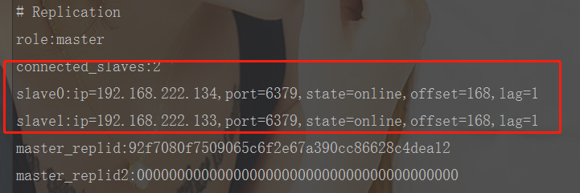
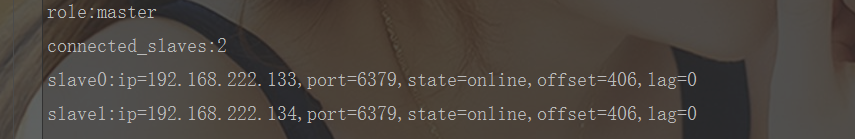
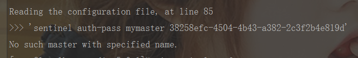

echo编辑整理，欢迎转载，转载请声明文章来源。欢迎添加echo微信(微信号：t2421499075)交流学习。 百战不败，依不自称常胜，百败不颓，依能奋力前行。——这才是真正的堪称强大！！！
搭建Redis集群之前请准备好3台已经安装好Redis的服务器，CentOS7下安装Redis请阅读:https://blog.csdn.net/xlecho/article/details/102975520
| 服务器地址 | 系统 | Redis版本 |
|---|---|---|
| 192.168.222.133 | CentOS7 | 5.0.1 |
| 192.168.222.134 | CentOS7 | 5.0.1 |
| 192.168.222.135 | CentOS7 | 5.0.1 |
我们以135作为master，其他两个节点全部作为slave节点
slaveof 192.168.222.135 6379
# 注意，如果你的节点设置了密码访问，你需要配置下面这个配置
masterauth master密码这里没有将slave设置成为‘只读’，如果实际生产环境如果不设置这个集群就会出现重大问题。
service redis start# 启动redis
redis-server redis.conf
# 连接redis
redis-cli -h 192.168.222.135 -p 6379
# 查看状态
info replication配置如果成功我们可以看到如下信息：

退出集群比较简单，可以直接删除掉上面的配置，也可以执行以下命令
slaveof no one看到这个信息我们就已经完成了我们的主从配置。但是什么是哨兵模式？哨兵模式是基于我们集群的，我们有了集群之后，我们就要来配置我们的哨兵模式了
哨兵模式英文名Sentinel，它是为了解决Redis集群的高可用应运而生的。Redis集群，一般来说只会有一个master服务，当master挂掉之后，之能手动切换master就会造成一段时间内的服务不可用。sentinel就是专门针对这种情况而产生的一个监听服务。它主要负责监听我们一个组内所有Redis，当我们的master挂掉之后，它就会根据Raft算法进行选举一台新的leader出来，然后将选举出来的leader当成我们的master。
哨兵模式的主要作用就是监控弄Redis集群，所以我们搭建哨兵模式之前要确认我们的Redis集群已经成功搭建了。哨兵模式的搭建其实也相对比较简单，只需要配置主节点监控即可。
# 找到redis根目录下面的sentinel.conf的配置文件，修改如下配置
daemonize yes
port 26379
protected-mode no
dir /usr/local/redis/redis-5.0.1/sentinel-tmp
sentinel monitor mymaster 192.168.222.135 6379 2
sentinel auth-pass mymaster 48835a9c-7a5a-4ec8-af6a-80af3e87b194
# 如果哨兵3s内没有收到主节点的心跳，哨兵就认为主节点宕机了，默认是30秒
sentinel down-after-milliseconds mymaster 3000
# 如果10秒后,master仍没活过来，则启动failover,默认180s
sentinel failover-timeout mymaster 10000# 启动redis服务
redis-server redis.conf
# 启动sentinel
redis-sentinel sentinel.conf模拟之前确保我们的redis、sentinel服务都启动了,登录master，直接在master上面进行shutdown。操作完成之后等待一会，然后使用登录我们的从服务器，连接上从服务的redis之后，我们使用命令info replication 查看当前节点是否成为了master


这是由于我们的下面两行配置的位置放反了引起的。正确顺序按照下面的顺序即可
sentinel monitor mymaster 192.168.222.135 6379 2
sentinel auth-pass mymaster 48835a9c-7a5a-4ec8-af6a-80af3e87b194做一个有底线的博客主